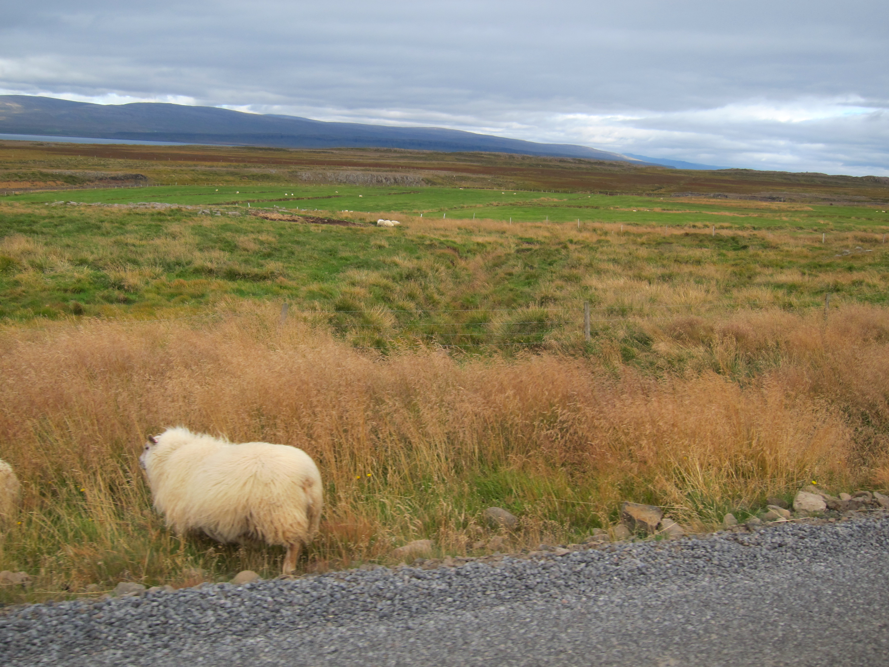

2016-09-22-thermal-writing
{
"layout": "post",
"title": "Thermal Writing",
"date": "2016-09-22 10:48:00 -0400",
"tags": "writing, blogging, dissemination of information"
}
Thermal Couplers of Writing
I'm penning this email with prose.io, as a foray into the worlds of an interface for a static, jekyll GitHub blog.
So far, so good.
- Authorized prose.io to interact with my GitHub.
- Found my blog repository, switched branches with ease.
- Clicked "new file" which put me in this editor I now find myself typing.
- I like this editor; so far I like it a lot.
- In fact, I've been able to preview my writing as I go.
- Jekyll keys off of filenaming convetions, and name of this file / post was conveniently started for me. I rue typing YYYY-DD-MM, my fingers simply can't do it.
- And now, I'm hoping that clicking the adorable save icon in the corner will save this markdown file to my blog repository, and thus, publish this "post".
If these writings to not ever make it to the Internet, may their voyage into /dev/null be quick(?) and painless.
If, however, they do find their way to a blog posting, then consider me tickled. I might end up using this for impromptu, tidy, enjoyable writing.
And here's a picture for good measure:
